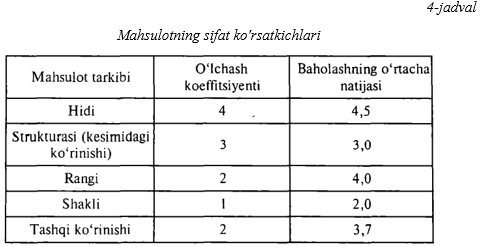

Mashgʻulotning maqsadi:Mahsulot sifati va uni baholash usullari bilan tanishish. Mahsulot
sifatini baholash usullarini amalda qoʻllash orqali mahsulotning sifatini baholashni oʻrganish.
Mahsulot sifatini oshirish masalasi oʻzining tarkibiga ko'ra murakkab boʻlib, texnik, iqtisodiy va
ijtimoiy aspektlarni oʻz ichiga oladi. Sifat masalasi tarmoqni industrial sohaga oʻtishida muhim
ahamiyat kasb etadi. Mahsulotlar sifati yangi mahsulot yaratishda shakllantiriladi va meэyoriy texnik
hujjatlarda aks ettiriladi. Bu hujjatlar ish lab chiqarishda, mahsulotni saqlashda, tashishda va savdoga
chiqarishda o'z kuchini saqlaydi. Mahsulot sifatini ta'minlash jarayonining yagona obyektiv boshqaruvi
o'zaro bog'langan va bo'ysundirilgan bosqichlarda, xomashyoni qabul qilishdan boshlab to tayyor
mahsulotni sotishgacha bo'lgan jarayonlarda olib boriladi. Shuning uchun me'yoriy texnik hujjatlarda
ko'rsatilgan texnologik rejimga amal qilish, ishlab chiqarilgan ·mahsulotlar sifatini barcha
jarayonlarda qattiq nazorat qilishni talab qiladi.
Yuqori sifatli mahsulotlar ishlab chiqarishni ta'minlashda texnik holatni yaxshilashga ham
e'tiborni
qaratish kerak. Texnologik jarayonni avtomatlashtirilgan liniyalarda amalga oshirish sifatli mahsulotlar
ishlab chiqarishni kafolatlaydi. Mahsulot sifatini anlqlashning asosiy tushunchalari va atamalari
«Mahsulot sifati boshqaruvi» tushunchasi va atamalari GOST 154-92 ga as os an tavsiflanadi. Mahsulot
sifatining texnik-iqtisodiy tushunchasi faqat mahsulot tarkibini o'z ichiga olmasdan, balki aholi talab,
istaklarini ham e'tiborga olgan holda mahsulot ishlab chiqarilishini ta'minlaydi. Mahsulot sifati uning
tarkibidagi xomashyo sifatiga bog'liq bo'- lib, uning sifatini (o'zaro biriktirilgan texnik, texnologik
va fIzikkimyoviy xususiyatlarini) belgilash iste'mol qiluvchiga bog'liq bo'ladi. Mahsulot sifatini
baholash uchun sifat va sonli sifat ko'rsatkichlaridan foydalaniladi. Sifat belgilarga mahsulot rangi,
shakli, konsistt!nsiyasi kiritiladi, sonli belgi esa uning geometrik va strukturaviy shaklini
ta'minlaydi. Mahsulotlar sifatini boshqarishda quyidagi sistema ko'rsatkichlaridan va uning tarkibini
xarakterlovchi asosiy kO'rsatkichlardan, masalan, rangi, ta'mi, hidi, namligi, konsistensiyasidan
foydalaniladi.
Kompleks ko'rsatkich mahsulotning bir necha oddiy yoki bir murakkab holatilli xarakterlaydi
(masalan,
fizik-kimyoviy, strukturaviy, mexanikaviy va organoleptik holatlari) va uning foydalanishga
yaroqliligini ta'minlaydi. Aniqlovchi ko'rsatkich mahsulot sifatini baholaydi. Organoleptik baho
aniqlovchi hisoblanadi. Rar qaysi ko'rsatkich 5 balli tizim bilan baholanadi, a'lo - 5, yaxshi - 4,
qoniqarli - 3, yomon - 2, juda yomon - I. Tahlilga asosan berilgan ko'rsatkich mahsulot sifatiga, un!
iste'mol qilish v'! sotish samarasig1 katta ta'sir ko'rsatadi.

Aniqlovchi ko'rsatkich quyidagicha topiladi: 4-4, 5-3, 0-2, 4-1-2,0-2-3,7-4,5. Integral ko'rsatkich
mahsl'lotn;ng kimyoviy t"lrkibini aniqlaydi, estetik ko'rsatkichlar esa uning ustki qismi ko'rinishining
originalligini baholaydi. Iqtisodiy ko'rsatkichlarda mahsulotlarni ish lab chiqarish, saqlash va sotuvga
chiqarish uchun sarfiangan mablag'lar hisoblanadi. Bu ko'rsatkich yordamida mahsulotning
texnologiyaviyligi va mahsulot sifatini boshqarishni belgilovchi omillar aniqlanadi. Patent huquqi
ko'rsatkichi mahsulotlarni nafaqat respublikamizda sotishga, balki uni boshqa mamlakatlarga eksport
qilishga ham yo'l ochib beradi.
Mahsulotning sifat ko'rsatkichlari Mahsulotning si fat darajasini qator ko'rsatkichlar (ba'zan
umumlashtiruvchi birgina ko'rsatkich) yoki mahsulotni ma'lum sifat kategoriyasiga kiritish orqali
xarakterlash mumkin. Mahsulot sifatining darajasini bah01ash zarurati rejal(lshtirish va yangi mahsulot
yaratish variantini tanlash, me'yoriy hujjatlarni ishlab chiqish, mahsulot sifatini nazorat qilish,
mahsulot sifatini oshirganligi uchun xodimlarni rag'batlantirish, sifatni baholash va axborotlar
yig'ishni tashkil etishda vujudga keladi. Mahsulotning sifat darajasini baholash natijalari unga
tegishli turdagi «(Sifat belgisi» yoki kategoriya berishga hamda bir variantdagi mahsulotning sifati
boshqa variantdagi mahsulot sifatidan yuqori yoki past ekanligi haqida qaror qabul qilishga xizmat
qiladi.